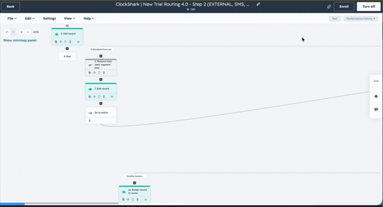

Programs Shipped
9
reporting, enablement + GTM rollouts
Systems Integrated
8
Salesforce, HubSpot, 6Sense and more
Hours Saved
2,500
across teams, annualized
AI Visibility
3% → 20%
↑ in 60 days
Featured Programs
Reporting systems, GTM rollouts, and enablement work
All
Dashboards
Enablement
AEO Share of Voice & Visibility Tracker
Weekly leadership dashboard tracking Simpro's Share of Voice and Visibility against 58 competitor brands in AI search responses.
Headline Result
Shipped
20%
Visibility (from 3%)
19.0%
Share of Voice
60 days
Time to result
Multi-Brand Demand Gen Pacing Dashboards
Real-time dashboards tracking non-paid MQLs and AI referral traffic pacing against targets, broken down by brand and region.
Shipped
AEO/GEO KPI Alignment Framework
A tiered KPI dashboard (Business-Critical / Health / Hygiene) segmented by audience, aligning the marketing team and SEO agency on AI-search performance.
Shipped
Lovable Landing Page Program Rollout
GTM enablement program launching Lovable to the Demand Gen and Campaigns & Events teams, with brand-compliant templates, a structured pilot, and a Storylane tutorial. Architected and onboarded the Campaigns team onto Lovable to ship their own landing and webinar pages.
Shipped
HubSpot Video Analytics Report Guide
Annotated leave-behind doc showing teams how to build custom video watch and replay reports in HubSpot.
Shipped
Marketing Enablement Training Guide
Interactive Storylane walkthrough of a Web Strategy Flash Report, guiding teams through AI referral traffic and MQL metrics.
Shipped
Visual Walkthroughs
Quick looks at the tools in action

Marketing Enablement Storylane Walkthrough
Guided tooltip tour of the Web Strategy Flash Report

HubSpot Workflow Trial
New automation workflow being tested in HubSpot